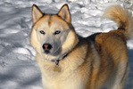

| SIBERIAN HUSKY | ||
|---|---|---|
| MENU | The Siberian Husky is a medium-sized working sled dog breed. The breed belongs to the Spitz genetic family. It is recognizable by its thickly furred double coat, erect triangular ears, and distinctive markings, and is smaller than the similar-looking Alaskan Malamute. |  |
| 642110330 SUPATSARA WANNAPRASERT | ||